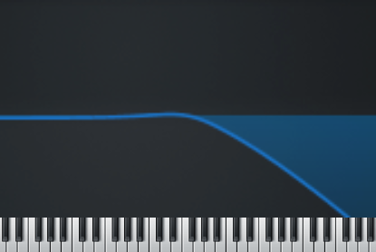
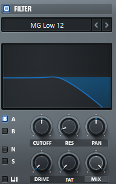

Serum合成器Filter模块自习
本帖用于自习Serum的滤波器模块。
滤波器顾名思义就是用来滤波的，简单地理解下可以看成这样一幅图：

上方的波形的横轴参数相当是频率，纵轴参数相当于是相应频率的声音的通过度，越高通过的越多，而越低则滤掉的越多。上图中的右边部分很低，说明滤波器将高频段的声音过滤掉了，所以经过这个滤波器的声音会感觉闷闷的。
最基本的滤波器应该是这三种：高通、低通、带通。
低通滤波器（Low）
意思就是只通过低频率，将高频率的声音过滤掉。
上面的那张图就是低通的滤波器。
高通滤波器（High）
同理，如图：
带通滤波器（Band）
只通过一段连续频率的滤波器叫带通滤波器，如图：
此外还有峰值增益（Peak）、陷波（Notch）等。
接下来看下Serum自带的Filter：

ABNS
那四个按钮表示 OSC A/B/Noice/Sub 是否进行滤波。
KeyTrack
音符追踪。
点亮以后滤波器的属性（Cutoff）会随输入音符的变化而变化，有时能让滤波效果更适应音符。
CUTOFF
Cutoff：截止频率。
用来修改允许通过的频段。
RES
Resonance：谐振、共鸣。
会把Cutoff周围的频段突出。
PAN
Pan（Stereo）：声相。
DRIVE
Drive：过载。
使输入滤波器的增益加强，太强可能会失真。
FAT
这个按钮会随选用的滤波类型变化，有时显示“FAT”，有时“FREQ”（Frequency），有时直接“-”。
MIX
修改通过滤波器的声音的比例。
点他一下会变成 LEVEL。
MENU
目录里默认有四大类：Normal（普通）、Multi（复合）、Flanges（法兰）、Misc（杂项，里面有很多有意思的滤波类型）。
波表
点击滤波器的图案可以切换到Phases，即通过滤波器后的波形。
结尾
这是个结尾。